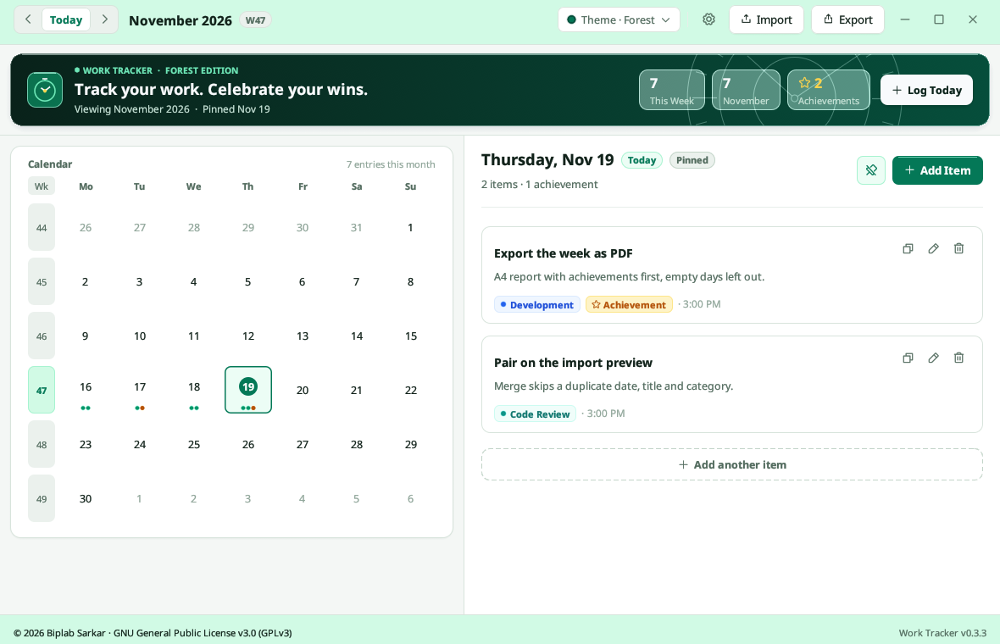

Work Tracker
THE PROBLEM · LIGHT
You can'tremember March.
Appraisal season has arrived, and March is already hard to recall.

THE LOG · FOREST
Write it downas it happens.
Work Tracker saves that day's tasks and achievements.

ONE REPORT · LIGHT
You get one report.
This is the proof your annual review needs.